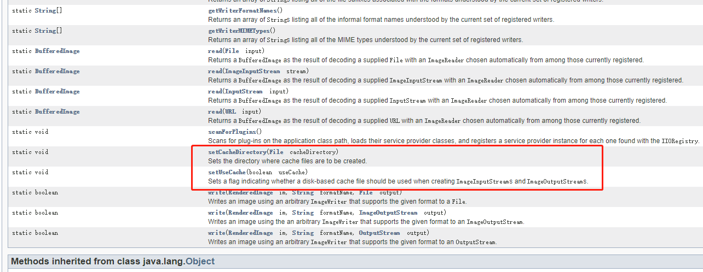
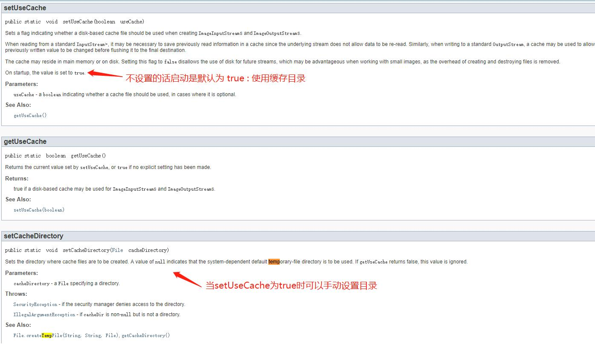

本文解决了JDK使用ImageIO创建图片时，报错Can’t create output stream 的报错总结，也是对自己的一个警示。
报错分析
最近在公司做了一个新增电子发票PDF的下载任务，里面多添加了一个PDF的生成方式，其中左上角需要生成一个二维码，二维码是使用的 第三方库的swetake去做的，图片生成时使用了JDK自带的ImageIO去生成的，结果在自测和测试环境都没有问题，一到预生产的测试环境就会有报错
1 | javax.imageio.IIOException: Can't create output stream |
其实在最开始的时候认为是环境问题，因为预生产的JDK为1.7, 而我的测试服务器的开发本地都是用的1.8, 但是很快就先不考虑这个了，毕竟怎么说异常栈这个temp下的文件报错得弄懂不是？ 之后又去看了看代码，但是发现并没有哪里有生成或用到这个文件，感觉应该是JDK里面源码有的操作，所以去仔细看了看这部分的源码API, 如下图

可以看到有个 setUseCache(boolean useCache)方法：在创建ImageInputStreams和ImageOutputStreams时是否应使用基于磁盘的缓存文件,和setCacheDirectory(File cacheDirectory) 方法：手动设置缓存目录。

上面为详细的方法API。
到此问题就解决一半了，可以看出确实是JAVA底层会创建出缓存文件的，那么解决方法也比较容易了。
解决方法
使用
ImageIO.setCacheDirectory(cacheDirectory);来指定缓存目录。但是该方法不适合我，毕竟生产环境的目录还是不敢瞎搞的，除非你搞到 tomcat的webapps下的ROOT下面，或者在你项目中你自己创建一个temp目录，之后去做指定。创建temp目录 首先我先看了一下测试服务器环境的tomcat和预生产环境的tomacat，发现预生产环境的tomcat下没有temp目录，执行命令
mkdir temp, 搞定。 之后测试就没出现上面的问题了，所以说出问题还是先不要想当然的感觉是jdk版本的问题才是，一步一步看异常解决才是硬道理。设置ImageIO.setUseCache(false) ，设置不使用文件目录缓存，但是这个一般来说不推荐。一般来说不使用文件缓存那就会使用内存去做缓存了，个人觉得文件缓存的话，生产环境服务器肯定配置够硬，但是要是使用内存的话jvm这个我就得打个问号了，当然这只是我个人的想法，可能也不对，希望有大佬或同学看到的话能评论一下，解解这个疑惑。希望自己能快速成长起来！
反思
由于本次报错时，是在这么一个情况。本地测试OK. 服务器测试OK, 而到测试人员的服务器测试报错，而我本地和自己的服务器JDK均为1.8，但是测试人员的JDK版本为1.7，再加上之前出过一次由于JDK版本不同而出现的问题，这次我也就先入为主，认为是JDK的问题了，这种想法是错误的，因为出现问题一定是应该先去分析异常栈和相关代码，才应该再得出结论，而不是一看是JDK的代码报错，就先入为主的认为是JDK版本问题，感觉自己想问题还是太不严谨了，罪过罪过，希望自己以后能多理性分析，也要多多的剖析各种源码。